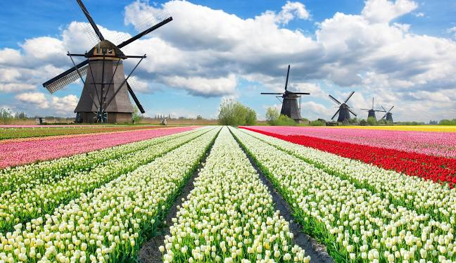
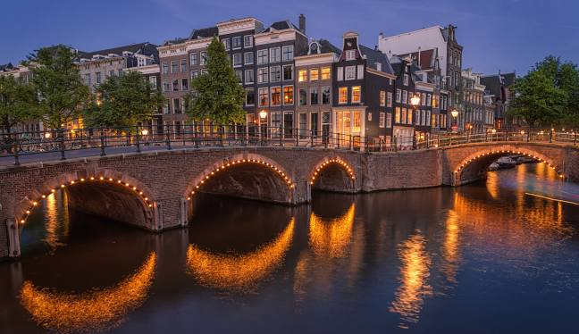
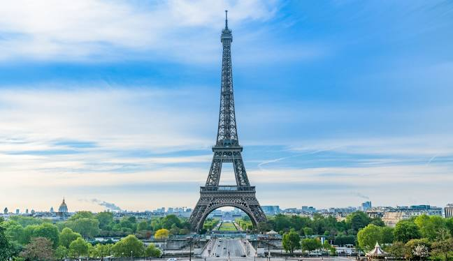
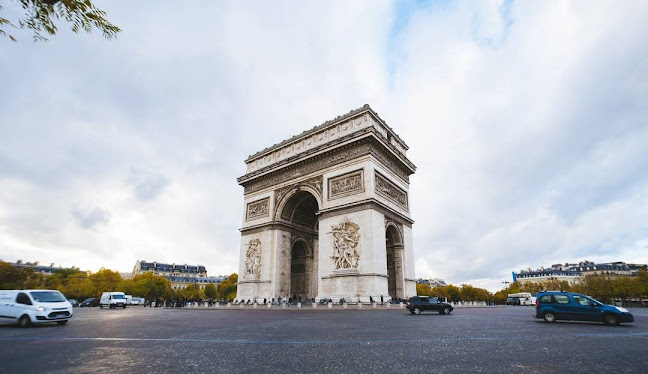
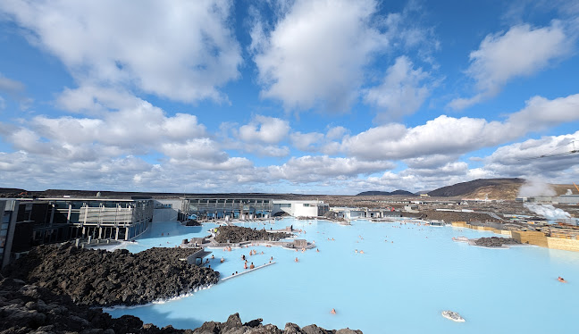
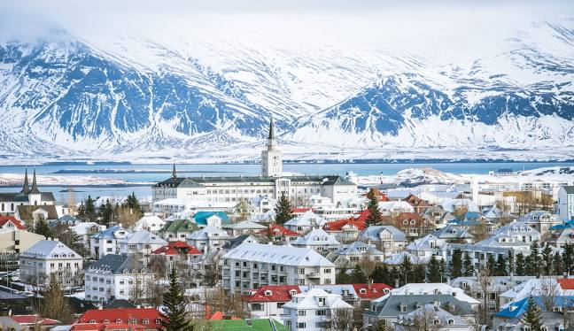
收藏最多梵谷畫作聞名遐邇，約有200幅油畫、500幅素描，以及850封完整的與弟弟往來的書信之手稿，其次則是荷蘭的庫勒-穆勒博物館
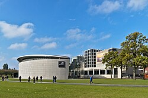
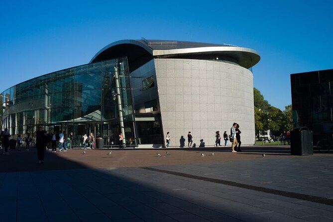
除了作為16世紀末至17世紀的成功城市規劃範例，現時也被列為世界文化遺產之一。總長度超過100公里的運河網絡橫跨整個城市，形成了近百個島嶼和一千多條橋樑。 運河兩岸有許多迷人的建築、餐廳、阿姆斯特丹標誌性的狹長房屋和景點，所以遊船絕對是到訪阿姆斯特丹必訪的體驗。
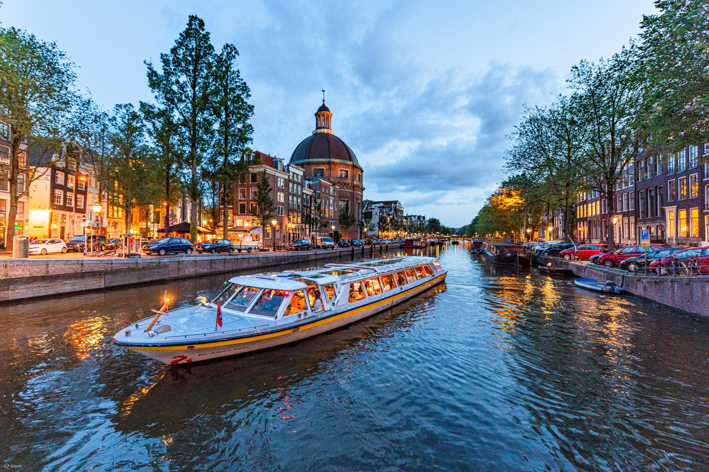
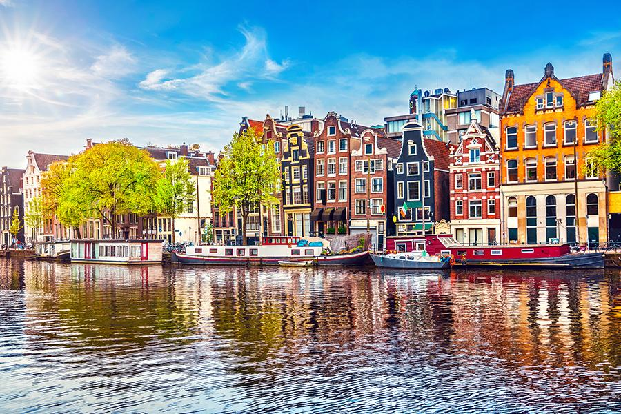
1997年列入了聯合國教科文組織的世界遺產名錄。這19座風車，呈風車步間的形式，是一個旅遊觀光地。其中一個靠近小孩堤防村的 風車在夏季供遊客參觀。遊客可步行或騎自行車參觀這成排的風車。
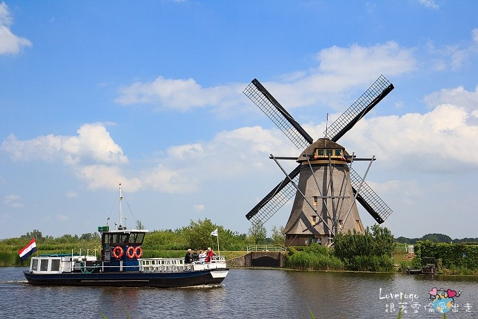
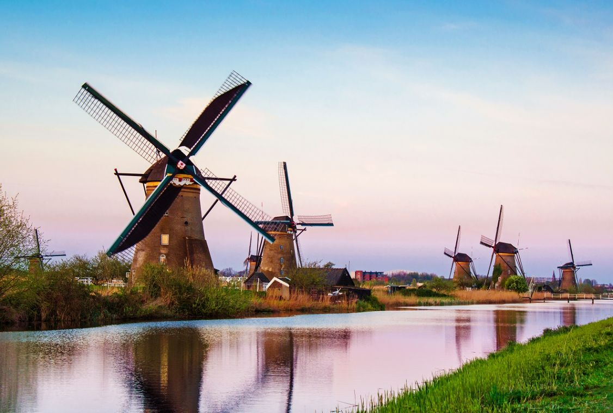
原為12世紀王宮的羅浮宮，1793年成為向民眾開放的博物館後，展示大量來自世界各地的重要藝術品，包括達文西《蒙娜麗莎》和古希臘「米洛的維納斯」等等。 羅浮宮本身就是一座壯麗的宮殿傑作，以及館內從古代文明到19世紀的多樣文化遺產，無論是藝術愛好者或歷史迷，都會陶醉在這深厚又獨特的文化聖地。
票價
| 羅浮宮門票 | 羅浮宮票價 |
|---|---|
| 門票價錢 | 17 歐元 |
| 團體票 | 17 歐元 |
| 免門票 |
➢ 未滿 18 歲遊客 ➢ 未滿 26 歲歐洲經濟區國家居民 ➢ 殘障人士及一名陪同人員 ➢ 巴黎博物館通行證 ➢ 更詳細免門票條件 |
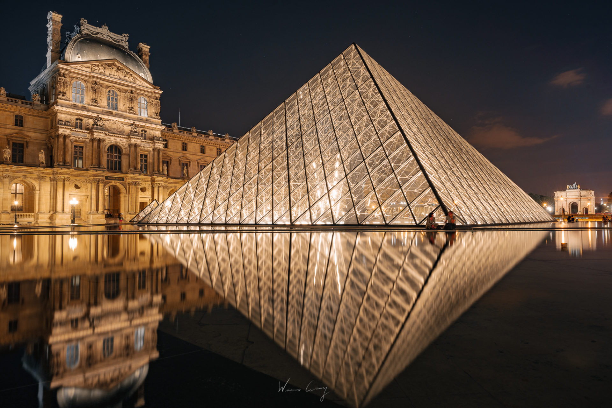
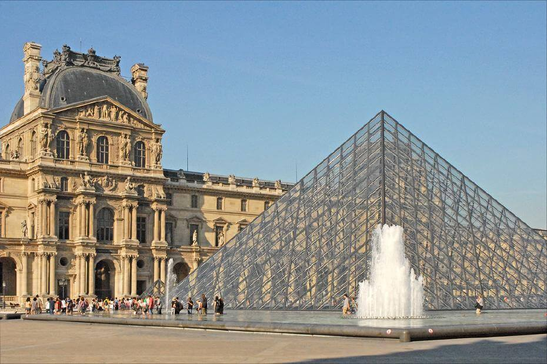
巴黎市區最重要的12條大街都以凱旋門為中心，向四周放射，氣勢磅礡，為歐洲大城市的設計典範。凱旋門1852年由拿破崙三世下令重新規劃巴黎,共17年時間,由7條大道改造成現在的12道光芒環繞,氣勢非常壯闊。
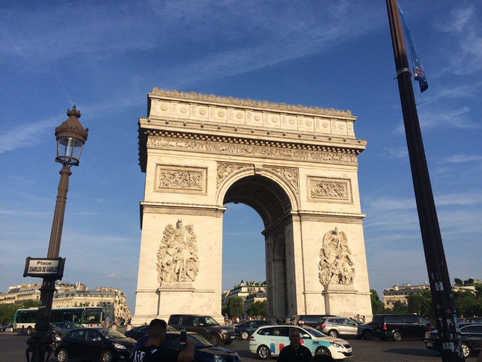
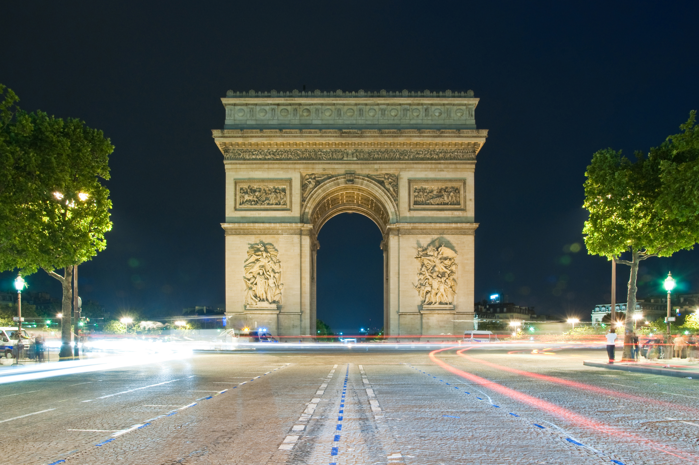
「Brúarfoss」是拱橋的意思，名字源自於瀑布上方的天然石拱橋 (拱橋早已倒塌)；Brúarfoss為冰島金圈Golden Circle途中的景點之一，先前因為處於相對偏僻的位置， 再加上瀑布顏色為夢幻的蒂芬妮藍Tiffany Blue，因此又被稱為「藍色秘境瀑布」。
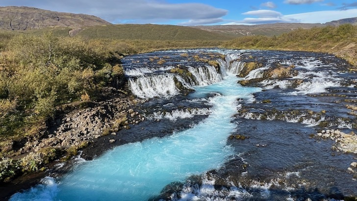
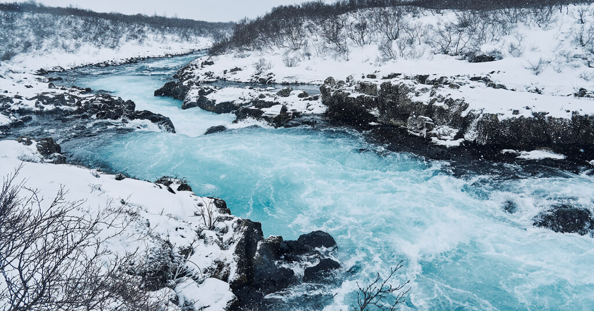